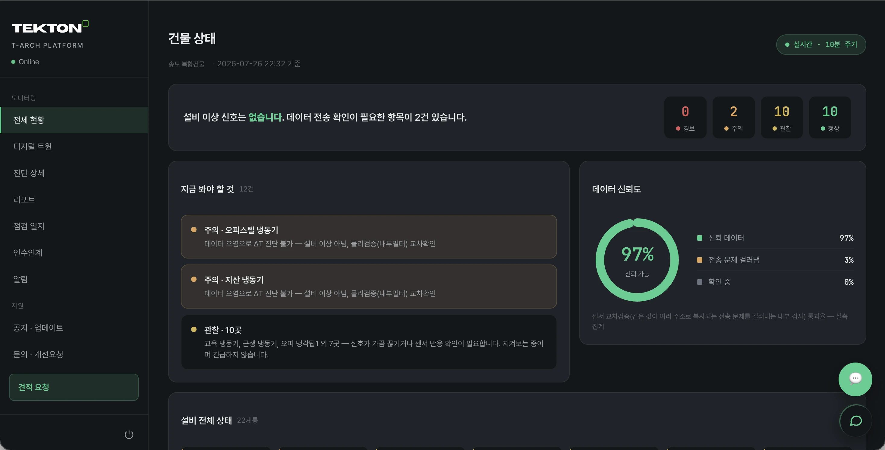
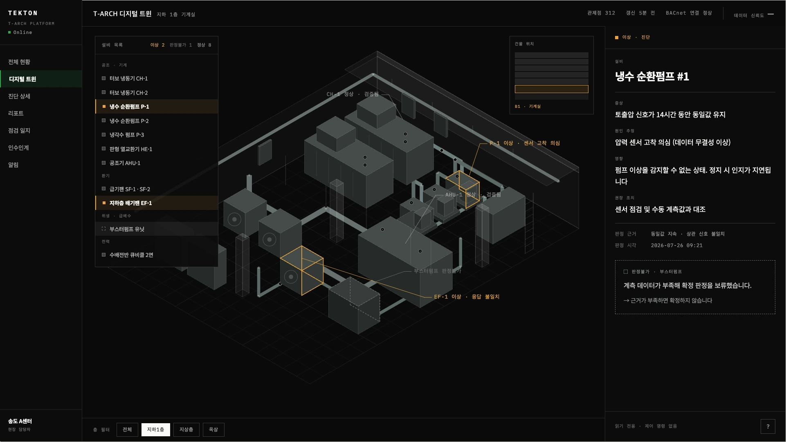

27℃, 정상입니다.
— 그런데 그 센서, 16시간째 똑같은 값이면?
고착된 죽은 센서. 값은 정상범위. 기존 시스템은 못 잡습니다. 사고는 그 뒤에 옵니다.
직접 해보기 — 값이 멈추면 어떻게 판정하나 값 고정만으로는 확정하지 않습니다
센서를 멈춰 보세요
예시 · Demonstration 값 고정만으로는 확정하지 않습니다. 주변 신호가 모순될 때 적발합니다- 값 변동
- 0.18℃ 진폭 / 최근 24회
- 주변 신호
- 냉수 공급 3.2℃ 변동 · 환수 0.21℃ 변동
- 교차검증
- 밸브 열림 명령 ↔ 온도 반응 = 일치
- 반복 횟수
- 0회 / 30일
실제 화면
데이터가 믿을 만한지 먼저 확인하고,
그다음 상태를 말합니다


어떻게 붙는가
검토에 필요한 것만 적었습니다
- 프로토콜
- BACnet/IP · BACnet/MS-TP · Modbus
- 연동 실증
- 지멘스 · 하니웰 · 국내 DDC 등 주요 BAS 연동 실증 완료
- 폐쇄망
- 현장 수집기(엣지 게이트웨이)를 현장에 두고 로컬에서 수집합니다
- 기존 시스템 영향
- 읽기 전용입니다. 제어 명령이 없고, 통신선에 직접 접속하지 않습니다
- 운영 중단
- 무중단입니다. 운영 중인 건물에 그대로 적용합니다
- 수집 범위
- 설비 운전 데이터만 수집합니다. 영상 · 음성 · 개인정보는 수집하지 않습니다
지멘스 · 하니웰 · 존슨컨트롤즈 · LG · 삼성 · 국내 DDC — 어떤 브랜드가 설치돼 있든 연결됩니다. 교체 없이, 추가 공사 없이.
4중 검증
진단보다
검증이 먼저입니다
-
01
데이터 품질 선검증
진단 전에 이 데이터를 믿을 수 있는지부터 확인합니다. 정상값을 반복하는 죽은 센서를 잡습니다.
-
02
독립 증거 교차확인
하나의 신호로 판단하지 않습니다. 명령 · 상태 · 물리결과를 함께 보고, 값이 진짜인지 교차검증합니다.
전력은 검증 신호로 쓰도록 설계돼 있습니다 (2026년 9월 연동 예정).
-
03
계측수준 상한
계측이 빈약하면 확신도를 제한합니다. 모르는 건 모른다고 합니다.
-
04
판정불가도 정식 결과
근거가 부족하면 억지로 확정하지 않습니다. 틀린 경보를 내지 않습니다.
확률로 추측하지 않고, 규칙으로 판정합니다 — 왜 그렇게 판단했는지 설명할 수 있습니다.
연결
진단서로 끝나지 않습니다
진단만 하는 시스템은 관리자에게 숙제를 남깁니다. T-ARCH는 그 진단서를 그대로 시공업체에 넘기고, 조치가 끝난 기록을 건물에 남깁니다.
- 대상
- CH-2 냉수 출구온도 센서
- 근거
- 동일값 16시간 지속 · 상관 신호 불일치
- 위치
- 지하 1층 기계실 · 냉동기 2호기
- 조치
- 결선 점검 후 필요 시 센서 교정 또는 교체
-
근거가 붙은 문서로 정리됩니다
-
검증된 시공업체가 그 문서를 들고 옵니다
-
조치 기록이 건물에 남습니다
설비가 설계대로 작동하는지 데이터로 확인하고, 필요한 조치까지 잇습니다. 진단에서 멈추지 않습니다.
왜 지금인가
ESG 공시 의무화
건물 에너지 데이터가 자산평가 · 규제 대응 요소가 됩니다.
제로에너지건축물 확대
설비 성능을 데이터로 증빙해야 합니다.
전기요금 상승 국면
설비 낭비의 비용 부담이 커집니다.
현장
지금 데이터를 보고 있는 건물
성숙도를 실가동 · 파일럿 · 제안으로 구분해 그대로 적습니다.
| 인천 송도 지식산업센터 | 312 관제점 · 5분 주기 | 실가동 |
|---|---|---|
| 고양 신축 오피스 | 주요 BAS 연동 실증 | 파일럿 |
| 다건물 실소유 건설사 · 수도권 | 1,200+ 관제점 | 파일럿 |
| 수도권 종합병원 | 무중단 적용 진행 | 파일럿 |
| 보안 등급 시설 · 폐쇄망 다중 현장 | 다중 현장 통합관제 | 제안 |
설비가 설계대로 작동하는지 데이터로 확인합니다. 누가 잘못했는지 판정하지 않습니다 — 무엇이 일어났는지 기록합니다.
확장
계량기가 거짓말하면, 절감도 거짓이 됩니다
에너지 관리는 대개 계량기가 맞다고 가정하고 시작합니다. 고착된 계량기, 틀린 변성기, 계측 대상 불일치 — 그 위에 쌓은 보고서는 무의미합니다. T-ARCH는 설비에서 그랬듯, 숫자가 맞는지부터 검증합니다.
-
설비 진단 · 가짜 정상 적발
실가동 -
전력 · 원격검침 교차검증
2026년 9월 연동 -
탄소 산정 · ZEB 인증 근거 데이터
전력 연동 후 -
소방설비 상태 감시
확장 예정
- 시설관리자 · 건물주
- 에너지 낭비 · 설비 사고예방
- 다중건물 관리업체
- 통합 관제 · 현장별 사고예방
- 자산운용사 · 부동산 펀드
- 자산가치 · NOI (가정 기준 예시)
- 공공 · ESG
- 규제 증빙 · 탄소 산정 근거 (9월 연동)
같은 엔진이 읽는 신호가 늘어납니다. 검증하는 방식은 그대로입니다.
요금
고장 하나만 잡아도,
구독료 이상을 아낍니다
사고가 난 뒤의 수리비가 아니라, 사고 전에 찾아내는 비용입니다.
- 소형
- 중소형 건물 1동
- 59만원 / 월
- 중형 추천
- 중대형 건물 · 리포트 전체 · 검증된 시공업체 연결
- 89만원 / 월
- 대형
- 250 관제점 이상 · 전담 관리자 배정
- 119만원 / 월
- 엔터프라이즈
- 다건물 포트폴리오 · 폐쇄망 대응
- 별도 협의
- 파트너(계장 · 자동제어 · 시공사) 조건은 별도 협의합니다.
- 다건물 포트폴리오는 건물당 별도 협의합니다.
- 모든 요금제 · 첫 1개월 무료 진단 · 읽기 전용 연결(공사 · 제어 없음)
- 설치비 180~250만원 (일회성, 구독과 분리)
시작하기
1개월 무료 진단,
설치 부담 없이 시작하세요
지금 시작하세요
놓치고 있던 고장부터,
찾아드립니다
- 읽기 전용 · 제어 없음
- 공사 · 교체 없음
- 첫 1개월 무료
- 시공 파트너 등록 문의도 같은 주소로